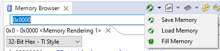
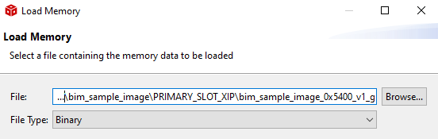
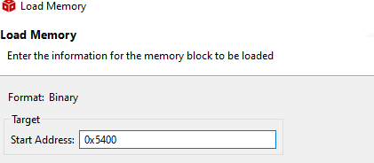

MSPM0 启动映像管理器 （BIM） 用户指南¶
1.引言¶
启动映像管理器 （BIM） 是面向 MSP 器件公开发行的一种 mcuboot 实现方案，用于使客户在开发过程中获得安全启动特性。
BIM 支持以下内容：
使用含 NIST P-256 曲线的椭圆曲线数字签名算法 （ECDSA）和哈希算法 SHA-256 验证一个或多个应用程序映像
安装在 RAM 低至 4kB 的器件中
占用不到 20kB 的闪存（因此，64kB 器件可以有两个 22kB 映像）
开源 mcuboot 经修改可符合终端开发人员的需求
验证映像无需硬件加速器或额外的硬件支持
BIM 当前不支持以下内容：
不会将应用程序映像加载到器件（不能替代引导加载程序）
不保证在器件上完全实现安全启动
注意：此特性当前处于开发测试阶段，因此可能会在未来版本中更新此信息
2.使用示例¶
建议运行现有的 boot_application 和 boot_sample_image 示例集，以便更好地理解每个组件的开发流程，然后再推进开发工作。提供的示例中包含一个测试密钥和若干预编译的映像，可以帮助开发人员熟悉如何成功地运行和验证示例。这两个工程应导入到兼容的 CCS 版本 (12.7.0+)。此示例使用 MSPM0L1306 或 MSPM0G3507 LaunchPad，设置在工程 README 中显示。
2.0 必要条件¶
要运行初始设置，请确保使用最新的 pip 包安装 Python 3.7 或更新版本，并运行以下命令下载必要的要求。
python -m pip install --user -r source/third_party/mcuboot/scripts/requirements.txt
2.0.1 OSX 或 Linux 中的 Python 版本控制¶
函数和预编译步骤将使用 带命令 python 的Python 3.7，以调用 python 可执行文件。因此，命令 python --version 应生成 3.7 或更高版本。
在 Linux 或 Mac 设置中，python 可能引用另一个版本，因此建议将 python3 命令别名设为 python；如果需要两个不同的版本，则将示例中的编译后步骤修改为使用 python3。
2.1 应用程序映像示例编译¶
应用程序映像示例 boot_sample_image 是一个 CCS 工程，它包含两个配置，可创建两个映像：一个进入主槽位，另一个进入副槽位。两个映像专为就地执行（XIP，稍后介绍）而设计，因此配置名称带有此后缀。
注意应用程序映像无法在没有启动应用程序的器件上独立运行。
要切换配置，可导航到工程的 properties，选择 Manage Configurations 设置活动配置。

建议编译两种配置，以便能够测试启动应用程序的更多功能。
此过程还包括编译后步骤，具体可参见 Properties > Build 的 Steps 选项卡。这些编译后步骤负责对映像签名，并将映像输出到二进制文件中，其中包含有关映像的重要信息。输出文件类似于 bim_sample_image_<slot>_<version>_<color>
编译后的映像二进制名称的元素如下：
槽位：加载映像的地址（后期阶段）
版本：映像的主要版本
颜色：映像的 LED 闪烁颜色
2.2 运行启动示例¶
编译 boot_application 示例。令器件闪烁之前，进入 Properties > Debug 并从“Debug”页面左侧的列表中选择“MSPM0 Flash Settings”。然后配置“Erase method”，仅擦除必要的扇区（如下所示）

自此之后，开始调试工程。现在应该进入主函数。现在器件上应该没有任何有效的映像，所以运行此示例应该会导致红色 LED 闪烁。
2.3 加载二进制映像¶
要将二进制映像加载到器件上，请在调试启动应用程序后，遵循以下步骤：
打开器件的存储器浏览器，方法是导航到 View > Memory Browser。要加载二进制映像，请暂停器件运行，点击带箭头的绿色器件封装，然后选择 Load Memory
 指向在编译应用程序映像中编译的特定映像示例。建议首先加载绿色映像。从下方所示的下拉列表中选择二进制文件类型。点击底部的 Next。
 最后，输入起始地址。这应该与第一个存储器槽位的值以及文件名中列出的值匹配。写入后，选择 Finish。
 通过提早检查存储器浏览器中的闪存（例如 0x0000），验证启动应用程序尚未被擦除。另外，通过向存储器浏览器中输入起始地址，验证映像已成功加载到映像槽位中。如果二者皆存在，则可以重新启动器件。器件上应该会运行当前最高版本的映像，而不受槽位影响。如果只加载主槽位映像，应该在验证结束时切换绿色 LED。如果两个映像都存在，则应切换蓝色 LED。
3 使用启动映像管理器进行开发¶
对于某些开发方法而言，上述示例是个不错的起点，但本节将详细介绍某些可能必要的开发方法，以充分利用启动映像管理器。
3.1 创建和使用密钥¶
ECDSA 是当前唯一支持的 mcuboot 身份验证方法。ECDSA 是非对称算法，意味着有独立的公钥和私钥。 公钥将存储在器件闪存中，私钥将由开发人员安全保存。 mcuboot 文件夹中包含可为映像签名并创建密钥的 imgtool.py python 脚本。
为生成新的密钥，用户可以输入以下命令，创建一个名为 newkey.pem（或任何适用名称）的密钥：
cd source/third_party/mcuboot/
scripts/imgtool.py keygen -k newkey.pem -t ecdsa-p256
然后，从 .pem 文件派生出以 DER 格式编码的公钥。它是从以下指令自动生成的。
scripts/imgtool.py getpub -k newkey.pem
这会向控制台输出公钥信息（以 DER 格式编码），然后此信息将被复制并粘贴到 EC256 部分中的 boot_keys.c（指定支持的算法）。
有关生成密钥的更多信息，可访问 imgtool 自述文件
3.2 创建应用程序映像并签名¶
mcuboot 工具能够验证和跳转到映像，但是必须首先以 mcuboot 理解的格式创建这些映像。具体操作方式是，修改链接器以符合存储器映射，同时使用 mcuboot 提供的 imgtool（包含在此 SDK 的 source/third_party/mcuboot/scripts 目录下）。
提供的 MSPM0L1306 默认映像存储器映射可作为 2 个同等大小片上映像的参考。根据编译配置和优化，mcuboot 需要的闪存大小不足 0x5000。因此，当前可安装到此器件上的最大映像是 0x5400（21kB，包括 256 字节的报头）。
提供配置相似的 MSPM0G3507 默认映像存储器映射。mcuboot 需要的闪存大小仍然不变，但应用程序映像可能大很多。可通过修改来符合用户需求。在此设置中，可安装到此器件上的最大映像是 0xD000 （52kB）。如果仅需要 XIP，可以移除暂存区。
本文档意在提供总结性指南，使开发人员能够开始使用 MSP 的启动映像管理器，而非全面介绍映像功能。 要详细了解报头的高级特性或开发其他特性，请参阅在线 mcuboot 文档，例如 mcuboot 设计文档。
3.2.1 编译未签名映像¶
启动应用程序目前唯一支持的编译器是 ticlang。但是，开发人员可以使用任何编译器编译其应用程序映像。用户可以使用喜欢的 IDE 通过创建一个二进制未签名输出文件将此映像转换为已签名的映像。但是，应用程序必须适合器件上映像槽位的大小。在有两个同等槽位的 64kB 闪存器件中，支持的大小上限是 21kB。映像不必独立于位置，也不必改变有关报头或矢量的信息，也能适当地发挥作用。但是，它们必须链接到执行槽位。
此外，如果没有启动应用程序，映像无法独立运行。开发应用程序映像时，最好针对器件上的 0x0000 进行开发，在没有启动应用程序的器件上运行。然后，当准备好创建映像时，将链接属性更改为从该槽位运行。
重要信息：mcuboot 将在使用就地执行 （XIP）的映像之间选择，因此映像默认不会交换。因此，开发人员必须针对映像将进入的槽位创建映像。在许多情况下，这可能意味着维护为主槽位和副槽位编译的两个映像。否则，可能出现异常行为。
编译映像需要对标准链接器文件进行几次修改： * 闪存的起点需要视为映像槽位的起点加报头偏移量。例如，如果主映像槽位始于 0x5400，并且 mcuboot 报头大小为 0x100，则应用程序的第一个闪存元素（中断矢量表）地址应为 0x5500。注意：中断矢量表必须是 256 位对齐的。因此，需要额外填充报头，以便正确访问矢量表。 * 闪存大小是映像大小减去报头和报尾的大小。未加密、就地执行的报尾一般很小（<50 字节），所提供示例的计算中未予以考虑。但是，在未来配置中，可能需要在映像大小中考虑报尾。 * RAM 可以保持不变，因为 BIM 中的所有 RAM 都将交给应用程序。
在 bim_sample_image 示例中可找到 ticlang 链接器文件的此类修改模板。
编译和创建映像后，输出应该转换为二进制格式。在 CCS 中相应的操作命令是：
${CG_TOOL_ROOT}/bin/tiarmobjcopy ${ProjName}.out --output-target binary ${ProjName}-unsigned.bin
建议使用后缀“unsigned”为输出文件命名，以避免混淆。将它添加到 IDE 工程的编译后步骤中可以自动执行此操作。
3.2.2 映像签名¶
然后，mcuboot 提供的 imgtool 可以给此映像签名并提供合适的报头。以下指令使用 imgtool 给映像签名：
./scripts/imgtool.py sign --header-size 0x100 --align 4 --slot-size 0x5400 --pad --version 1.0.0 -s 1 --pad-header --key path/to/private/key.pem ${ProjName}-unsigned.bin ${ProjName}.bin
开发人员可能需要编辑的信息如下：
密钥 - 开发人员必须将密钥路径更改为其私钥（pem 文件），私钥可以按照创建和使用密钥中的步骤生成
版本 - 开发人员应加入对映像的版本控制
槽位大小 - 如果存储器映射已更改，请参阅存储器映射自定义，需要考虑槽位大小。
安全版本 - 用户可以更改软件的安全版本（-s 选项）以进行回滚保护，但是测试版目前不支持此特性。
bim_sample_image 工程（路径已填充）的编译后步骤也包含此函数。
3.2.3 映像加密¶
启动映像管理器的测试实现中不支持映像加密。
4 修改 BIM¶
4.1 其他映像管理方法¶
就地执行 （XIP）是默认的映像管理方法，但其他方法（例如交换）有不同的优势。测试实现中目前仅支持 XIP。
4.2 存储器映射自定义¶
在器件上可以自由更改器件的存储器映射。通过打开器件的 flash_mem_backend.c 文件并将定义调整为用户指定设置，可以更改映射。但是，务必确保在签名步骤的应用程序链接器和映像大小中也要考虑对存储器映射所做的所有更改。
注意：某些 M0L 器件存在已知的问题，其中存储器的最后 8 个字节无法成功编程。由于 mcuboot 分扇区工作，所以不建议将这些器件的最后一个扇区用作映像槽位或暂存槽位的一部分。扇区可以写入和擦除，也可以由应用程序使用。如果器件受到影响，器件标准链接器文件的闪存大小会有略微减小。
4.3 失败行为¶
当前，加载成功的映像失败之时，将进入 boot_application.c 文件中定义的 mcubootFail 函数。发生失败后的默认行为是切换 LED2（LaunchPad 亮红灯）。但是，此行为可根据开发人员的需求自定义。例如，如果所有的有效映像失败，可加入永久的功能简化版映像。
4.4 其他配置¶
mcuboot 还有其他配置可用。更多信息可参阅 mcuboot 文档。但是，并非所有这些特性当前都在 MSP 上实现或可行。
5 MSP 中的安全原则¶
5.1 静态写保护¶
为避免启动映像管理器遭到不必要的擦除，务必将 NONMAIN 区域配置为禁止向启动应用程序所在的闪存区域写入。
有关 NONMAIN 区域的更多信息，请参阅特定于器件的技术参考手册。
5.2 使用 NONMAIN 的信任根¶
在 NONMAIN 上启用写保护后，仍然可以通过恢复出厂设置擦除整个器件。恢复出厂设置预防（或仅允许在输入密码后恢复出厂设置）机制让开发人员能够确保器件引导到 NONMAIN。
5.3 回滚保护¶
mcuboot 提供的一项安全特性是回滚保护：用户可以设置一个安全版本，新映像必须与之匹配或高于它，才能让启动映像管理器接受。这样可防止攻击者安装可能包含在后续版本中已经修复的漏洞的之前的映像。
当前的 M0L 或 M0G 器件上不提供此特性，因为在启动后静态发生非主写保护。回滚保护一般要求硬件能够动态地（在验证之后，但在跳转到映像之前）阻止对区域的写入。